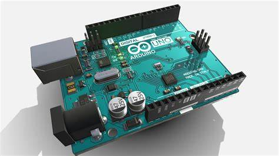
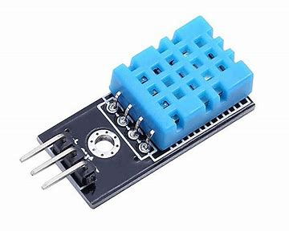
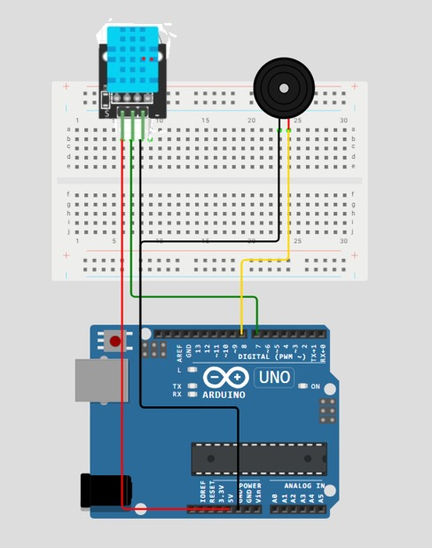

La Crypte du Souffle Vital
Présentation du Projet
Tu avances prudemment dans une crypte ancienne, où l'air est lourd et chargé d'un silence inquiétant. Devant toi, un autel de pierre recouvert de symboles oubliés. Au centre repose un mystérieux artefact qui semble endormi: un petit cristal relié à une étrange boîte sonore. Tu t'approches et lis l'inscription gravée sur la pierre: "Seul le souffle des étoiles révélera la mélodie." Soudain, une faible lueur émane du cristal. C'est un capteur ancien, conçu pour réagir à la température ambiante. Mais l'air brûlant de la crypte l'a scellé dans un état de dormance. Tu comprends alors: si tu peux refroidir l'artefact en soufflant dessus, il révélera son chant sacré...
Fonctionnement :
Fonctionnement du défi
- Le capteur DHT11 mesure la température en continu.
- Si Température < 22°C → Le système détecte l'anormalie.
- Le buzzer s'active pour jouer la mélodie "Frère Jacques" pour indiquer que l'enigme est résolu.
- Si la température est élevé, rien ne se passe .
Fonctionnement du Bonus
- Mode Temps Limité: La température doit descendre sous 22°C en moins de 30 secondes, sinon la crypte se referme et la mélodie est perdue!
- Mode Son Mystique : Ajoute une deuxième mélodie cachée qui ne se joue qu'à 20°C ou moins.
- Mode Indices Anciens: Affiche la température en direct sur le moniteur série pour aider les aventuriers à ajuster leur souffle.
- Mode Inverse: L'Épreuve de la Flamme Sacrée : Modifie le code pour détecter une température élevée (ex: frotter le capteur avec les doigts pour monter à 30°C et déclencher une autre mélodie).
Liste du Matériel
| Composant | Modèle | Quantité |
|---|---|---|
| Carte Arduino | Arduino UNO | 1 |
| Capteur de température | DHT11 | 1 |
| Buzzer | Buzzer passif | 1 |
| Breadboard | - | 1 |
| Fils de connexion | Jumpers | Plusieurs |
Caractéristiques Techniques
Carte Arduino UNO

- Microcontrôleur : ATmega328P
- Tension de fonctionnement : 5V
- Tension d'entrée recommandée : 7-12V
- Courant max par broche d'E/S : 40 mA
- Fréquence d'horloge : 16 MHz
Capteur de Température DHT11

- Tension d'alimentation : 3.3V - 5V
- Plage de température : 0°C à 50°C
- Précision : ±2°C
- Plage d'humidité : 20% à 90% RH
Buzzer Passif

- Tension de fonctionnement : 3.3V - 5V
- Courant nominal : 10-30 mA
- Fréquence de résonance : ~2 kHz
Breadboard (Plaque d'essai)

- Courant max par rangée : 1A
- Tension max : 300V
Fils de Connexion (Jumpers)

- Courant max supporté : 1-3A
- Longueur : 10-30 cm
Logiciel et Programmation
- Logiciel : Arduino IDE
- Langage de programmation : Arduino (C++)
Schémas
Schéma électrique du projet

Schéma synoptique du projet

Codes Arduino
Code Arduino du Défis
#include <dht11.h>
#define DHT11PIN 7
#define SPEAKER_PIN 8
dht11 DHT11;
// Fréquences des notes en Hz
#define NOTE_DO 262
#define NOTE_RE 294
#define NOTE_MI 330
#define NOTE_FA 349
#define NOTE_SOL 392
#define NOTE_LA 440
// Mélodie "Frère Jacques"
int melody[] = {
NOTE_DO, NOTE_RE, NOTE_MI, NOTE_DO,
NOTE_DO, NOTE_RE, NOTE_MI, NOTE_DO,
NOTE_MI, NOTE_FA, NOTE_SOL,
NOTE_MI, NOTE_FA, NOTE_SOL
};
// Durées des notes (en ms)
int noteDurations[] = {500, 500, 500, 500, 500, 500, 500, 500, 500, 500, 1000, 500, 500, 1000};
void playMelodyFJ() {
int length = sizeof(melody) / sizeof(melody[0]);
for (int i = 0; i < length; i++) {
tone(SPEAKER_PIN, melody[i], noteDurations[i]);
delay(noteDurations[i] * 1.30);
}
}
void setup() {
Serial.begin(9600);
pinMode(SPEAKER_PIN, OUTPUT);
}
void loop() {
float temperature = (float) DHT11.temperature;
Serial.print("Température (°C) : ");
Serial.println(temperature, 2);
delay(1000);
if (temperature < 22) {
playMelodyFJ();
} else {
noTone(SPEAKER_PIN);
}
}
Code Arduino du Bonus
#include <dht11.h>
#define DHT11PIN 7
#define SPEAKER_PIN 8
dht11 DHT11;
// Fréquences des notes en Hz
#define NOTE_DO 262
#define NOTE_RE 294
#define NOTE_MI 330
#define NOTE_FA 349
#define NOTE_SOL 392
#define NOTE_LA 440
// Mélodie de "Frère Jacques"
int melody[] = {
NOTE_DO, NOTE_RE, NOTE_MI, NOTE_DO,
NOTE_DO, NOTE_RE, NOTE_MI, NOTE_DO,
NOTE_MI, NOTE_FA, NOTE_SOL,
NOTE_MI, NOTE_FA, NOTE_SOL,
NOTE_SOL, NOTE_LA, NOTE_SOL, NOTE_FA, NOTE_MI, NOTE_DO,
NOTE_SOL, NOTE_LA, NOTE_SOL, NOTE_FA, NOTE_MI, NOTE_DO,
NOTE_DO, NOTE_SOL, NOTE_DO,
NOTE_DO, NOTE_SOL, NOTE_DO
};
// Durées des notes (en ms)
int noteDurations[] = {
500, 500, 500, 500,
500, 500, 500, 500,
500, 500, 1000,
500, 500, 1000,
250, 250, 250, 250, 500, 500,
250, 250, 250, 250, 500, 500,
250, 250, 500,
250, 250, 500
};
// Fréquences des notes
#define NOTE1_DO 262
#define NOTE1_RE 294
#define NOTE1_MI 330
#define NOTE1_FA 349
#define NOTE1_SOL 392
#define NOTE1_LA 440
#define NOTE1_SI 494
#define NOTE1_DO_HIGH 523 // Do de l'octave supérieure
// Mélodie "Happy Birthday"
int melody1[] = {
NOTE1_SOL, NOTE1_SOL, NOTE1_LA, NOTE1_SOL, NOTE1_DO_HIGH, NOTE1_SI,
NOTE1_SOL, NOTE1_SOL, NOTE1_LA, NOTE1_SOL, NOTE1_RE, NOTE1_DO_HIGH,
NOTE1_SOL, NOTE1_SOL, NOTE1_SOL, NOTE1_MI, NOTE1_DO_HIGH, NOTE1_SI, NOTE1_LA,
NOTE1_FA, NOTE1_FA, NOTE1_MI, NOTE1_DO_HIGH, NOTE1_RE, NOTE1_DO_HIGH
};
// Durées des notes (plus rapides)
int noteDurations1[] = {
300, 300, 600, 600, 600, 900,
300, 300, 600, 600, 600, 900,
300, 300, 300, 300, 300, 300, 600,
300, 300, 300, 300, 600, 900
};
// Fréquences des notes
#define NOTE2_DO 262
#define NOTE2_RE 294
#define NOTE2_MI 330
#define NOTE2_FA 349
#define NOTE2_SOL 392
#define NOTE2_LA 440
#define NOTE2_SI 494
// Mélodie "Au clair de la lune"
int melody2[] = {
NOTE2_DO, NOTE2_RE, NOTE2_MI, NOTE2_RE, NOTE2_DO,
NOTE2_MI, NOTE2_RE, NOTE2_RE, NOTE2_DO, NOTE2_DO,
NOTE2_RE, NOTE2_MI, NOTE2_RE, NOTE2_DO, NOTE2_MI,
NOTE2_RE, NOTE2_RE, NOTE2_DO, NOTE2_RE, NOTE2_RE,
NOTE2_RE, NOTE2_LA, NOTE2_LA, NOTE2_RE, NOTE2_DO,
NOTE2_SI, NOTE2_LA, NOTE2_SOL, NOTE2_DO, NOTE2_DO,
NOTE2_RE, NOTE2_MI, NOTE2_RE, NOTE2_DO, NOTE2_MI,
NOTE2_RE, NOTE2_RE, NOTE2_DO
};
// Durées des notes (en millisecondes)
int noteDurations2[] = {
500, 250, 250, 250, 700, // Première phrase
250, 250, 250, 250, 700, // Deuxième phrase
250, 250, 250, 250, 250, // Troisième phrase
250, 250, 250, 250, 700, // Quatrième phrase
250, 250, 250, 250, 700, // Cinquième phrase
250, 250, 250, 250, 700, // Sixième phrase
250, 250, 250, 250, 700, // Septième phrase
250, 250, 250, 250, 1000 // Huitième phrase
};
void playMelodyAU() {
int length = sizeof(melody2) / sizeof(melody2[0]);
for (int i = 0; i < length; i++) {
tone(SPEAKER_PIN, melody2[i], noteDurations2[i]);
delay(noteDurations2[i] * 1.30); // Pause entre les notes
float temperature = (float) DHT11.temperature;
Serial.print("Temperature (C): ");
Serial.println(temperature, 2);
if (temperature < 30 ){
loop();
}
}
}
void playMelodyHB() {
int length = sizeof(melody1) / sizeof(melody1[0]);
for (int i = 0; i < length; i++) {
tone(SPEAKER_PIN, melody1[i], noteDurations1[i]);
delay(noteDurations1[i] * 1.20); // Pause réduite entre les notes
}
}
void playMelodyFJ() {
int length = sizeof(melody) / sizeof(melody[0]);
for (int i = 0; i < length; i++) {
tone(SPEAKER_PIN, melody[i], noteDurations[i]);
delay(noteDurations[i] * 1.30); // Petite pause entre les notes
}
// Pause avant de rejouer la mélodie
}
void playMelody1() {
int length = sizeof(melody) / sizeof(melody[0]);
for (int i = 0; i < length; i++) {
tone(SPEAKER_PIN, melody[i], noteDurations[i]);
delay(noteDurations[i] * 1.30); // Petite pause entre les notes
float temperature = (float) DHT11.temperature;
Serial.print("Temperature (C): ");
Serial.println(temperature, 2);
if (temperature <= 20 ){
playMelodyHB();
break;
}
}
}
void setup() {
Serial.begin(9600);
pinMode(SPEAKER_PIN, OUTPUT);
}
void loop() {
float temperature = (float) DHT11.temperature;
Serial.print("Temperature (C): ");
Serial.println(temperature, 2);
delay(1000);
if (temperature < 22) {
playMelody1();
} else {
noTone(SPEAKER_PIN);
}
*/
// BONUS mode inverse
float temperature = (float) DHT11.temperature;
Serial.print("Temperature (C): ");
Serial.println(temperature, 2);
delay(1000);
if (temperature < 22) {
playMelody1();
}
else if (temperature >= 30 ){
playMelodyAU();
}
else {
noTone(SPEAKER_PIN);
}
//
}
Repos Github
https://github.com/DgnSid/Crypte-du-souffle-vital.git